Index
The Message Viewer Application
The Message viewer application is a simple Swing application which
allows the user to view messages currently on a queue and to delete
them.
Running the makeviewer
Ant target creates the message viewer application in the MSGINF_HOME/build/viewer
directory. As this directory could be deleted by subsequent builds, it
would make sense to copy this directory elsewhere.
The runviewer script
starts the message viewer application:
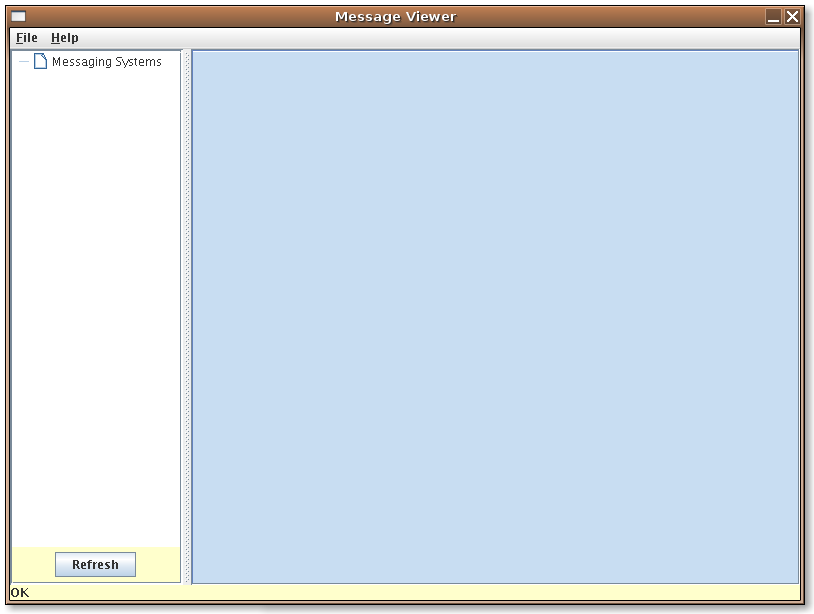
Open the msginf.xml file
using the File|Open...
menu:
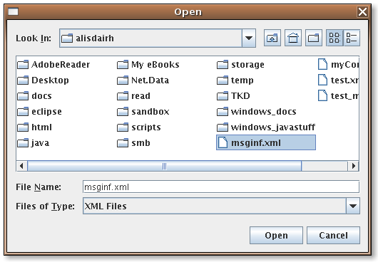
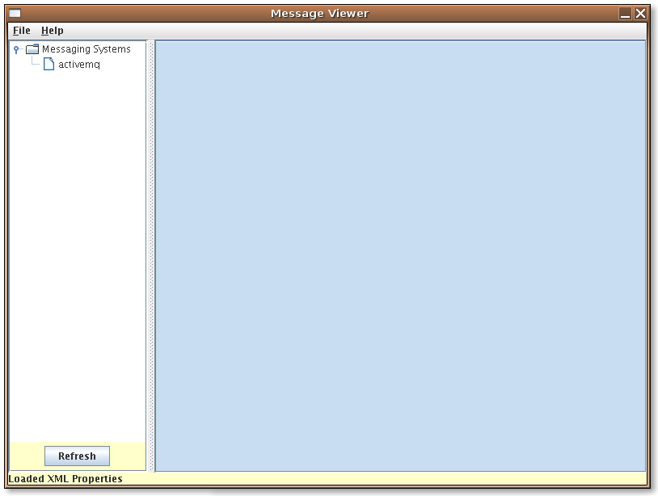
This loads the available messaging systems into the tree. When the activemq messaging system is
clicked, the activemq
context is queried and all the available queues in the context are
displayed:
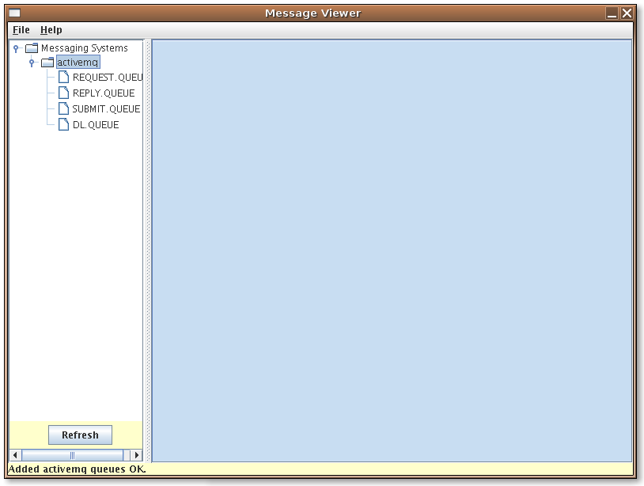
When each queue is clicked, the application attempts to display all the
messages in the queue. For example, if there are messages in the SUBMIT.QUEUE queue, the
following will be displayed:
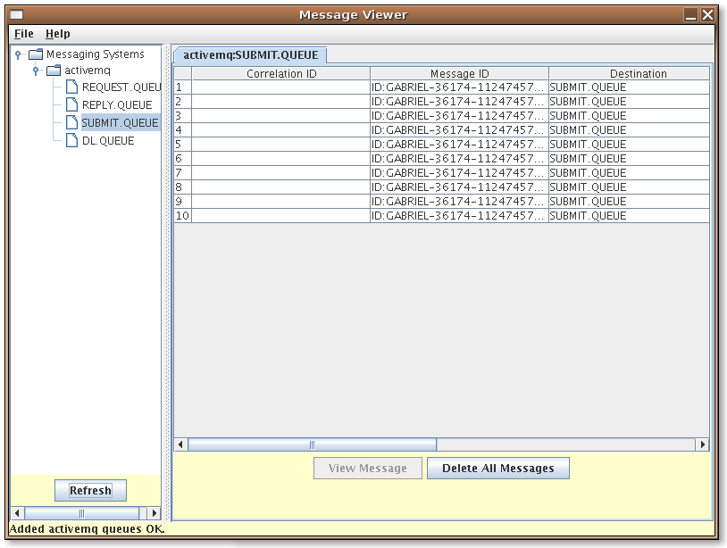
If there are no messages in the queue selected a message box will
appear:
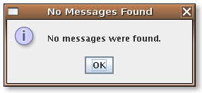
If a message is selected, the View
Message button will become enabled:
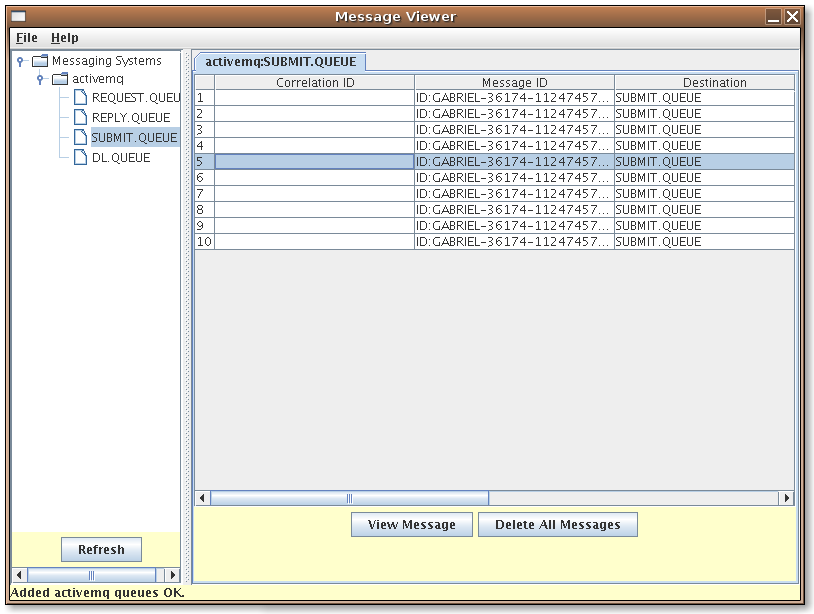
Clicking on the View Message button will display the message contents:
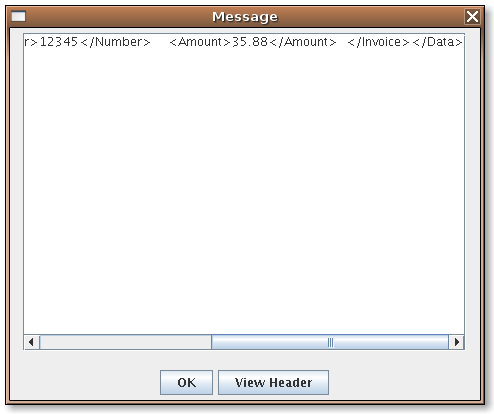
Binary messages will only display the message size and not the actual
contents. The OK button
dismisses the dialog box. The View
Header button will display the message header:
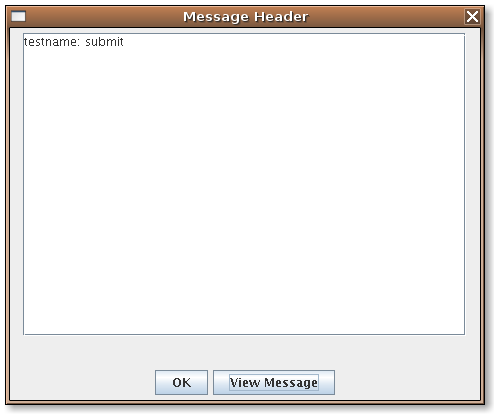
The View Message button
will display the message again.
The Delete All Messages
button will delete all the messages in the queue and remove the right
hand display panel. First the user is asked to confirm the delete:
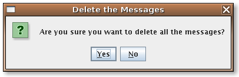
If No is selected, the
messages are NOT deleted. If Yes
is selected, the messages are deleted:
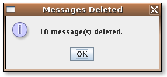
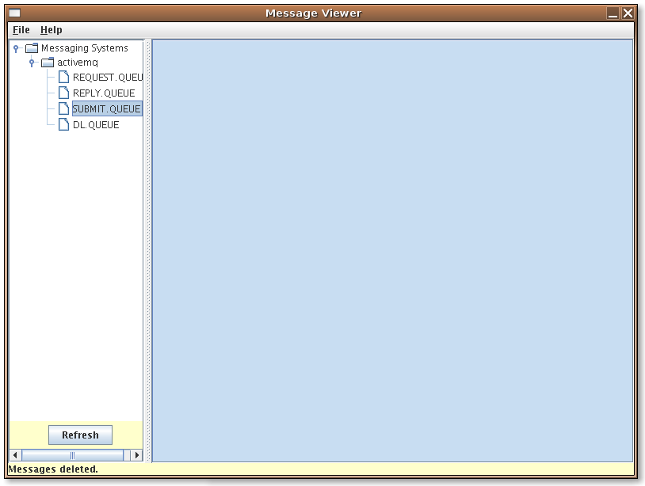
Click on the Refresh
button to confirm the messages have been deleted:
Index